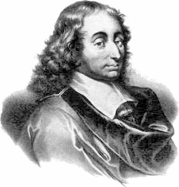
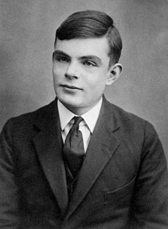
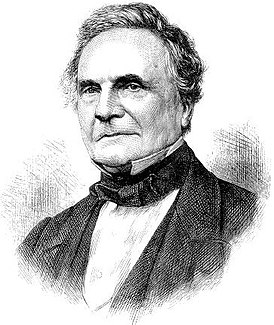
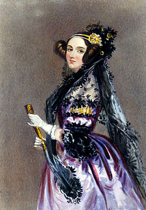

Знаменитые информатики
|  | Блез Паскаль (19 июня 1623, Клермон-Ферран, Франция — 19 августа 1662, Париж, Франция) — французский математик, механик, физик, литератор и философ. Классик французской литературы, один из основателей математического анализа, теории вероятностей и проективной геометрии, создатель первых образцов счётной техники. |
|  | Алан Тьюринг (23 июня 1912 — 7 июня 1954) — английский математик, логик, криптограф, оказавший существенное влияние на развитие инф��рматики. Кавалер Ордена Британской империи (1945), член Лондонского королевского общества (1951). Предложенная им в 1936 году абстрактная вычислительная «Машина Тьюринга», которую можно считать моделью компьютера общего назначения, позволила формализовать понятие алгоритма и до сих пор используется во множестве теоретических и практических исследований. Научные труды А. Тьюринга — общепризнанный вклад в основания информатики (и, в частности, — теории искусственного интеллекта) |
|  | Чарльз Бэббидж (26 декабря 1791, Лондон, Англия — 18 октября 1871, там же) — английский математик, изобретатель первой аналитической вычислительной машины. Иностранный член-корреспондент Императорской академии наук в Санкт-Петербурге (1832). Написал труды по теории функций, механизации счёта в экономике. Сконструировал и построил (1820—22) машину для табулирования. С 1822 года работал над постройкой разностной машины. В 1833 году разработал проект универсальной цифровой вычислительной машины — прообраза современной ЭВМ. |
|  | Ада Лавлейс (10 декабря 1815, Лондон, Великобритания — 27 ноября 1852, Лондон) — английский математик. Известна прежде всего созданием описания вычислительной машины, проект которой был разработан Чарльзом Бэббиджем. Составила первую в мире программу (для этой машины). Ввела в употребление термины «цикл» и «рабочая ячейка», считается первым программистом в истории. |